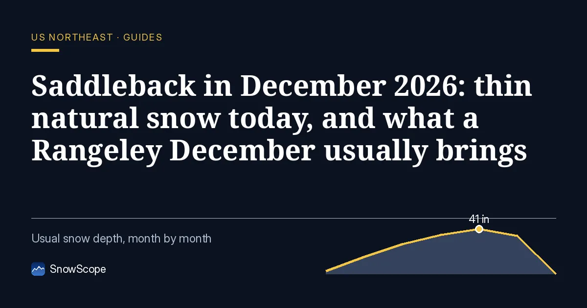
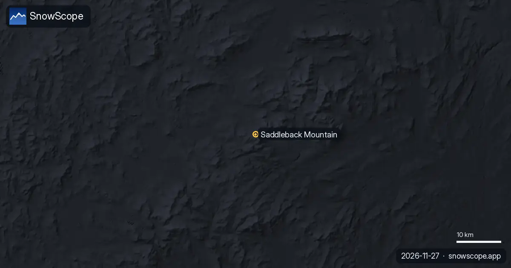

Saddleback in December 2026: thin natural snow today, and what a Rangeley December usually brings
Saddleback starts December with only 4 in (10 cm) of natural snow on its upper slopes and about 3 in (7 cm) more forecast by Monday. That is behind a normal year: at 3,071 ft (936 m) the pack is 1 in (2 cm), where 5 in (12 cm) is usual for late November. December is usually when the mountain catches up.
See the live snow forecast for Saddleback Mountain in the SnowScope appSnow depth, powder alerts and the 3D map, free.

Snow today and this weekend
Natural snow up top: 4 in (10 cm). Saturday brings about 1 in (2 cm), Sunday 0 in (1 cm), Monday 2 in (4 cm). Over seven days the summit gets about 2 in (5 cm). The mountain runs from 2,149 ft (655 m) to 3,996 ft (1,218 m), one of the biggest verticals in New England.
Until the natural base builds, the open terrain depends on snowmaking on the main trails.
What a normal December looks like
At 3,071 ft (936 m) the usual depth is 10 in (25 cm) on December 8, 13 in (32 cm) on December 15 and 17 in (42 cm) on Christmas Day. In a quarter of winters it is less than 9 in (23 cm) on December 25, in another quarter more than 22 in (55 cm).
Snow lay on the ground at that height on Christmas Day in 100% of winters, and the usual New Year's Day depth is 19 in (48 cm).
Why Saddleback does better than most
Saddleback sits far inland in western Maine, high and cold, where storms that bring rain to the coast often fall as snow. Its upper mountain, above the trees, collects wind-driven snow on the big open trails like the Kennebago Steeps.
That is also its weakness in early season: the high, exposed terrain needs a deep base and calm weather before it opens. December skiing is usually on the lower and middle trails.
Planning a December trip
The quietest weeks are the first two of December, when lift tickets are at their lowest and the mountain is mostly locals. Christmas week is busy, but much less than the resorts along the Interstate.
Rangeley is a long drive from Boston or Portland: about two hours from Portland and four from Boston. Roads in the Rangeley Lakes area can be snowy and icy, and moose are common at dusk.
Saddleback against its neighbours
Sugarloaf, half an hour away, is bigger and higher-profile; Sunday River, farther south, has more snowmaking. Saddleback's advantage is space and character: fewer people, long natural trails, and a loyal crowd of local skiers who come for the steeper upper mountain.
In early December all three rely on snowmaking. Natural snow decides when the off-trail glades and the upper terrain open, and that usually happens after the middle of the month, when a normal winter has 13 in (32 cm) at 3,071 ft (936 m).
For a holiday week that mixes skiing with snowshoeing, ice fishing and quiet evenings, the Rangeley Lakes area is hard to beat in New England.
The mountain's recent history adds to the appeal: it reopened under new owners after several closed winters, and the Rangeley community has rallied behind it.
Quick answers
Is the summit open in December? Usually only after a good run of storms; the lower and middle mountain open first.
Is it a good place to learn? Yes: the lower mountain has long, gentle trails and a ski school, away from the big crowds.
How do I follow conditions? The Saddleback snow page has the base, mid-mountain and summit every day.
Tips for skiers
- Early December: ski the snowmaking trails and keep the summit for later in the season.
- Carry a winter emergency kit for the drive to Rangeley.
- Book Christmas lodging in Rangeley early; the town has few beds.
- Compare with other New England resorts on the US Northeast snow hub.
About these numbers
Snow numbers: SnowScope's snow map and forecast for today, and our record of 46 past winters at each resort (an estimate for the area, not the resort's own report).
Official avalanche bulletins: avalanche.org (US national portal)
Cite this report
For research, teaching or the press: the numbers and charts are free to reuse under CC BY 4.0 with this citation.
SnowScope (2026), Saddleback in December 2026: thin natural snow today, and what a Rangeley December usually brings, https://snowscope.app/blog/en/2026/11/saddleback-maine-december-2026-snow-what-to-expect-rangeley.html, accessed 2026-11-27
SnowScope (Atlas Labs). (2026, November 27). Saddleback in December 2026: thin natural snow today, and what a Rangeley December usually brings. SnowScope snow reports. https://snowscope.app/blog/en/2026/11/saddleback-maine-december-2026-snow-what-to-expect-rangeley.html
BibTeX
@misc{snowscope2026saddlebackmainedecember2,
author = {{SnowScope (Atlas Labs)}},
title = {Saddleback in December 2026: thin natural snow today, and what a Rangeley December usually brings},
year = {2026},
month = nov,
howpublished = {\url{https://snowscope.app/blog/en/2026/11/saddleback-maine-december-2026-snow-what-to-expect-rangeley.html}},
note = {Published 2026-11-27 18:07 UTC; accessed 2026-11-27}
}· CC BY 4.0 · Methods, data and tools →
Saddleback Mountain: snow and temperature by height, this winter vs last (tools) →
Follow Saddleback Mountain
Free: a message when fresh snow is coming, and the forecast every morning.
More snow reports

Wildcat Mountain will receive the most snow in the Northeast over the next 14 days, with 29 cm forecast by our models as of November 19.

The 0 °C level reaches 12,861 ft (3,920 m) on 21 November in the US Northeast. Snow line peaks at 11,811 ft (3,600 m), above all resort tops.

Only 16 US Northeast resorts have skiable snow on 18 Nov. Thin cover and rain-crust risk mean careful gear choices. Forecasts for 19-21 Nov show no new snow.